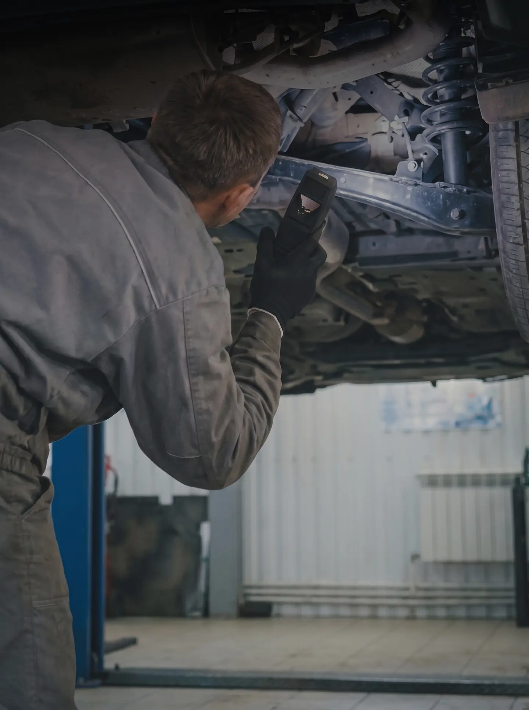
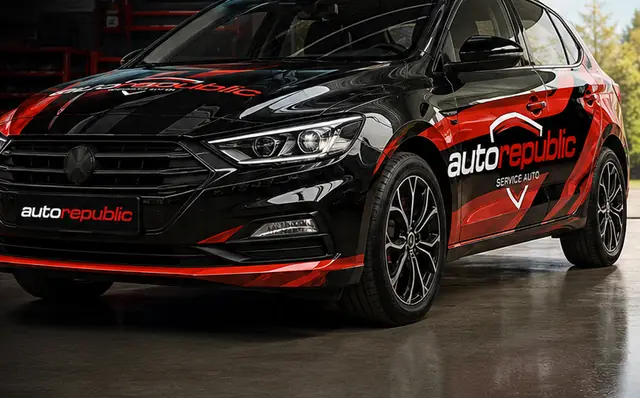
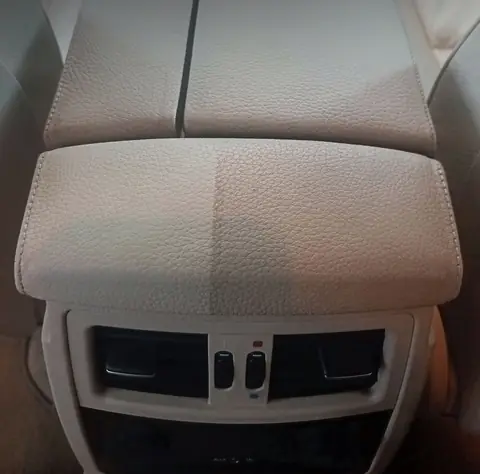
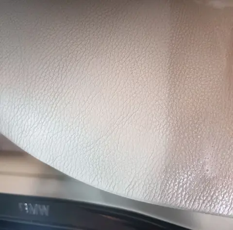
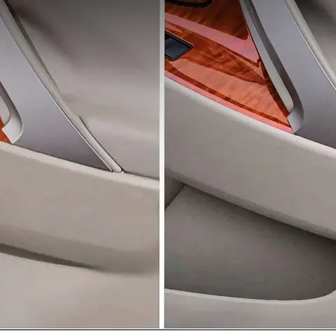

Luni – vineri 09–18, sâmbătă 09–14
Service auto în Chișinău
Îți spunem ce are mașina și cât costă, înainte să ne apucăm de lucru.
- Toate mărcile
- Programare online în 2 minute
- Str. Columna 170, Tracom
Ce simți la mașină?
Alege ce observi și îți spunem de unde începem.
Scârțâie la frânare
De obicei sunt plăcuțele uzate până la indicator sau discurile ruginite. Verificarea durează puțin, iar frânele nu se amână.
S-a aprins Check Engine
Calculatorul mașinii a salvat o eroare. Diagnoza computerizată arată exact ce senzor sau sistem a raportat problema.
AC-ul nu mai răcește
Cel mai probabil sistemul are prea puțin freon sau o scurgere. Verificăm etanșeitatea și încărcăm freonul.
Mașina trage într-o parte
Semn tipic de geometrie dereglată sau de presiune diferită în anvelope. Uneori e și o piesă de suspensie uzată.
Bătăi pe denivelări
Bucșe, bielete sau amortizoare uzate. Le găsim pe elevator și schimbăm doar ce are joc.
Smucituri la schimbarea treptelor
Poate fi uleiul vechi din cutie, o eroare de adaptare sau uzura ambreiajului. Începem cu diagnoza cutiei.
Pornește greu dimineața
Bateria slăbește la frig, iar demarorul sau alternatorul pot ceda. Testăm sistemul de pornire și de încărcare.
Vine iarna
Schimb de anvelope, test baterie, antigel și lichid de parbriz pentru iarnă, la o singură vizită.
Ce reparăm
Un singur service pentru diagnoză, reparații, anvelope, testare tehnică și spălătorie.
Octombrie – martie
Pregătește mașina de iarnă
Verificăm tot ce contează la frig, la o singură vizită.
- Schimb anvelope de iarnă
- Testul bateriei
- Verificarea sistemului de încălzire
- Frâne și schimbul lichidului de frână
- Protecție anticorozivă pentru partea inferioară
- Lichid de parbriz pentru iarnă

Cum decurge o vizită
- Te programeziOnline, pe WhatsApp sau la telefon. Alegi ziua și ora.
- Facem diagnozaVerificăm mașina și găsim cauza, nu doar simptomul.
- Aprobi prețulÎți spunem ce e de făcut și cât costă. Lucrăm doar după ce spui da.
- ReparămCu piese originale sau echivalente de top, după bugetul tău.
- Predăm mașinaÎți explicăm ce am făcut și când e următoarea verificare.
De ce AutoRepublic
Prețul îl afli înainte
După diagnoză îți spunem ce are mașina și cât costă reparația. Fără costuri ascunse.
Fără reparații inutile
Îți spunem ce e urgent și ce mai poate aștepta. Recomandări sincere, nu o listă lungă de piese.
Toate mărcile
Mașini europene, japoneze, coreene sau americane, de la mașini mici de oraș la SUV-uri.
Piese de calitate
Originale sau echivalente de top. Îți spunem diferența de preț înainte de comandă.
Garanție la lucrări
Garanție de … luni la manoperă și garanția producătorului la piese.
Aștepți confortabil
Zonă de așteptare cu Wi-Fi, băuturi și gustări. Sau lași mașina și pleci liniștit.
Din atelier
Curățare și protecție pentru interior din piele. Pe cadrele marcate, stânga e partea curățată, dreapta e cum a venit mașina.

DupăÎnainte DupăÎnainte
DupăÎnainte
DupăÎnainte
Atelierul nostru, pe TikTok
Arătăm ce găsim la mașini, cât costă reparațiile și ce greșeli fac des șoferii. Peste 400.000 de vizualizări în 2026.
Urmărește @autorepublic.md

Ce spun clienții
Text din recenzia Google a clientului, 2–3 rânduri.
Text din recenzia Google a clientului, 2–3 rânduri.
Text din recenzia Google a clientului, 2–3 rânduri.
Întrebări frecvente
Lucrați cu toate mărcile de mașini?
Da. Lucrăm cu mașini europene, japoneze, coreene și americane, de la mașini mici de oraș până la SUV-uri.
Trebuie să mă programez?
Programarea îți garantează ora și locul liber. Fără programare te primim dacă avem loc, dar s-ar putea să aștepți.
Cât costă reparația?
Prețul exact depinde de mașină și de piese. După diagnoză primești oferta și decizi dacă începem. Prețurile orientative sunt pe pagina Prețuri.
Pot aștepta mașina la voi?
Da. Pentru lucrările scurte ai zonă de așteptare cu Wi-Fi, băuturi și gustări.
Care e programul?
Luni – vineri 09:00 – 18:00, sâmbătă 09:00 – 14:00. Duminica suntem închiși.
Unde vă aflați?
Pe str. Columna 170, în Parcul Industrial Tracom, Chișinău. Ajungi ușor și cu transportul public.
Unde ne găsești
Suntem în Parcul Industrial Tracom, pe str. Columna 170. Ajungi ușor și cu transportul public, iar cât lucrăm la mașină te poți odihni în zona de așteptare.
str. Columna 170 (Parcul Industrial Tracom)
Chișinău
Luni – vineri 09–18, sâmbătă 09–14
- Luni – vineri
- 09:00 – 18:00
- Sâmbătă
- 09:00 – 14:00
- Duminică
- Închis
str. Columna 170 (Parcul Industrial Tracom)
Chișinău
Programează-te în 2 minute
Alegi lucrarea, ziua și ora. Te sunăm ca să confirmăm.